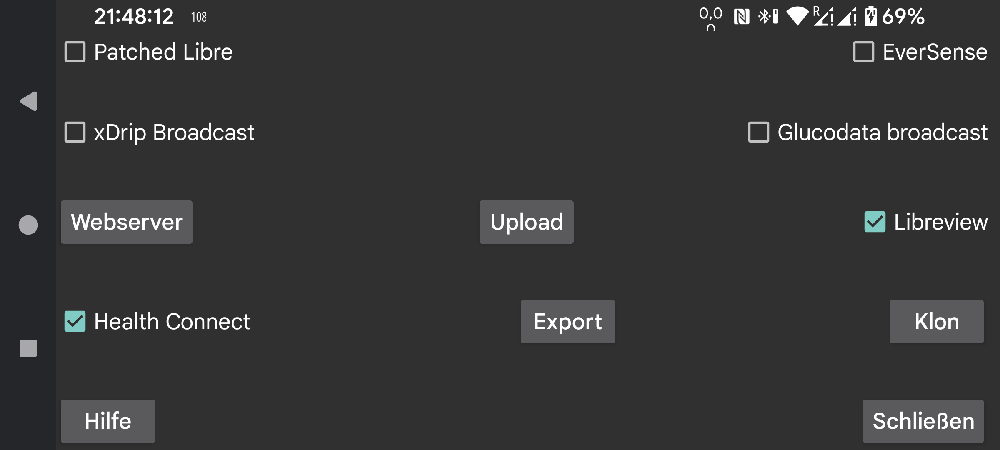

Senden Sie minutengenaue Glukosewerte an Health Connect . Sie können anderen Apps Zugriff auf diese Glukosewerte gewähren, beispielsweise Google Fit . Andere Apps können wiederum auf Daten von Google Fit zugreifen.
Verbinden Sie sich mit Libreview, um die Glukosewerte and Mengen des Freestyle Libre 2 und 3 an Libreview zu senden und die Konto-ID zu erhalten, die bei der Aktivierung des Freestyle Libre 3-Sensors verwendet wird.
Der Patched Libre-Broadcast selbst ist in Ordnung, aber xDrip ändert die Werte, wenn es sie vom Patched Libre-Broadcast empfängt. Da Nutzer diesen Broadcast ausschließlich auf diese Weise verwenden, plante ich, den Broadcast zu entfernen.
xDrip ändert keine Werte, wenn es Glukosewerte vom EverSense-Broadcast empfängt oder wenn der Webserver in Juggluco als Nightscout-Datenquelle verwendet wird.
Noch eine Glukosebroadcast. Damit kann jede Minute ein Glukosewert an xDrip gesendet werden. xDrip ignoriert fast alle davon, da es auf einem Wert in 5 Minuten besteht. Sie können diese Einschränkung aufheben, indem Sie den Quellcode von xDrip bearbeiten. Ändern Sie 4 * 60 * 1000 in 55 * 1000 in app/src/main/java/com/eveningoutpost/dexdrip/models/BgReading.java , sodass Folgendes entsteht:
public static BgReading readingNearTimeStamp(long startTime)
{
long
margin = (55 * 1000);
return
readingNearTimeStamp(startTime, margin);
}
Der Vorteil gegenüber der Patched Libre broadcast besteht darin, dass xDrip die Glukosewerte nicht auf eine nicht spezifizierte Weise umwandelt.
Senden Sie die gleiche Broadcast, die in xDrip mit „Einstellungen->Inter-App-Einstellungen->Lokaler Broadcast“ aktiviert wurde. Apps wie AndroidAPS hören es sich an. Im Gegensatz zur ursprünglichen xDrip-Broadcast, die alle 5 Minuten ausgestrahlt wurde, sendet Juggluco diese Broadcast jede Minute.
Eine neue Broadcast, die dieselbe Funktion wie die xDrip Broadcast hat. Eine einfache Beispielanwendung, die empfangene Glukosewerte in logcat schreibt, finden Sie hier: Glucose broadcasts.
Wenn Sie Juggluco als Datenquelle in G-Watch angeben, müssen Sie diese Broadcast aktivieren.
Geben Sie die Apps an, an die diese Broadcast gesendet werden soll.
Webserver, der mit xDrip-Uhren und einigen Nightscout-Apps verwendet werden kann.
Auf einen Nightscout-Server hochladen.
Senden Sie alle Daten über eine Internetverbindung an eine andere Instanz von Juggluco und erstellen Sie so einen Klon von Juggluco auf einem anderen Gerät. Vorhandene Daten werden überschrieben.
Daten in einer Datei speichern.